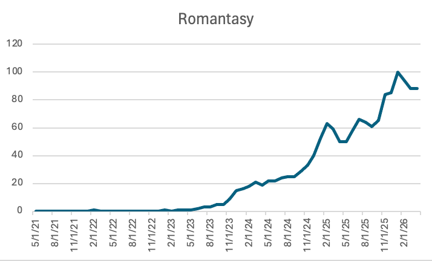
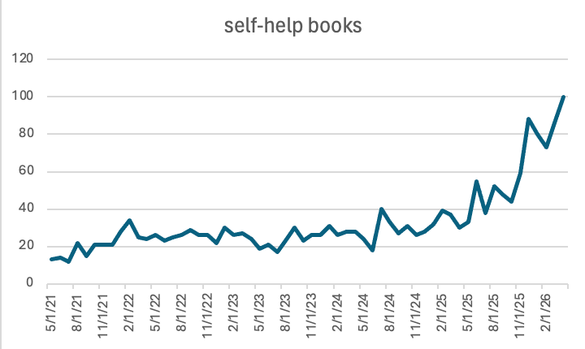
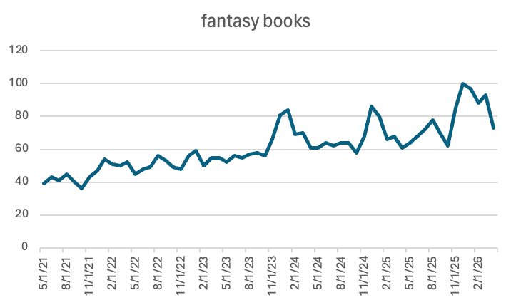
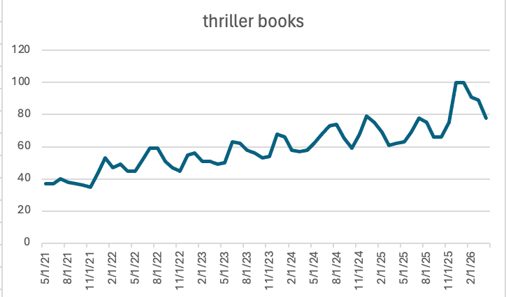
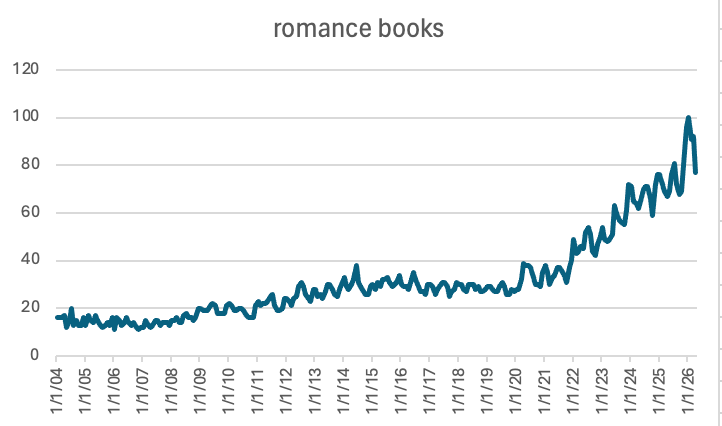
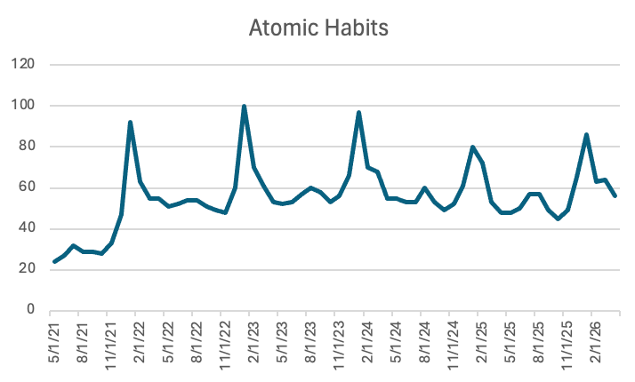
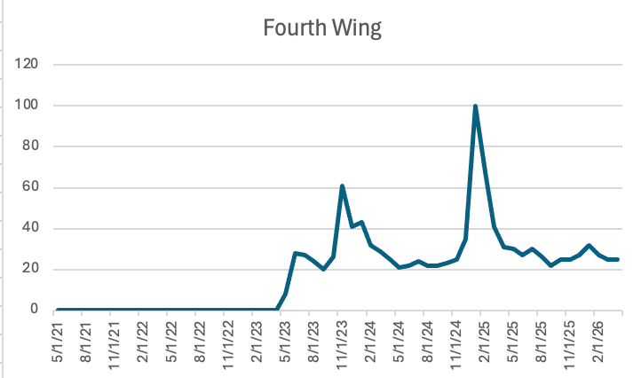
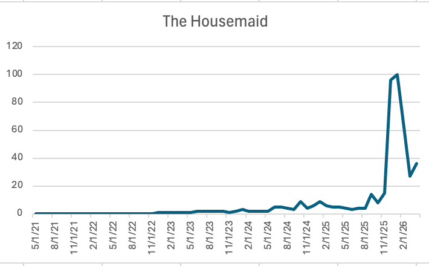
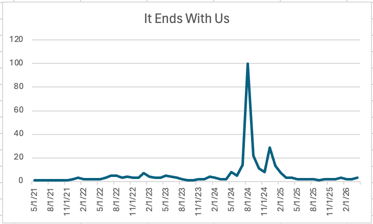
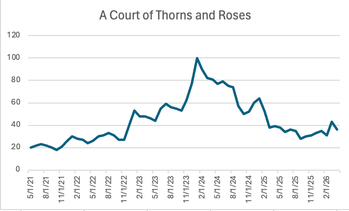

Genres that are easier to trend online. Looking at genre search trends helped me see that BookTok is not only making individual books popular. It is also making certain kinds of books more visible. Romance, romantasy, fantasy, thrillers, and self-help books all show strong search interest over time. These genres work well online because they are easy to recommend quickly and usually create strong reactions, whether that is emotional romance, plot twists, fantasy worlds, or advice people can apply to their lives.

This graph shows that search interest in romantasy stayed very low for years and then started rising quickly around 2023 and 2024. This matters because romantasy is one of the clearest genre trends connected to BookTok. The rise suggests that social media did not just make certain books popular, but helped make an entire genre more visible.

Search interest for self-help books rises a lot toward 2025 and 2026. This connects to books like Atomic Habits because self-help ideas are easy to turn into short videos, quotes, and online advice content.

Fantasy books show steady interest with bigger spikes around 2024 and 2025. This connects to the rise of romantasy and fantasy series that became popular through BookTok reactions, fan communities, and recommendation videos.

Thriller books already had strong search interest, but the graph still shows growth over time. This supports the idea that thrillers work well online because readers like sharing reactions to plot twists and fast-paced stories.

Search interest for romance books grows a lot after 2021 and reaches some of its highest points in 2025 and 2026. This connects to BookTok because romance is one of the genres that shows up constantly in recommendation videos and online book lists.
My biggest takeaway from these graphs is that BookTok is not only pushing specific titles. It is also helping certain genres become more visible. Romantasy is the clearest example because the term barely shows up earlier in the graph, but then rises quickly as fantasy romance books become more popular online.
3. Book Titles
Comparing specific book titles helped me see that BookTok does not create only one type of popularity. Some books have long-term visibility, some spike around a release, and others blow up later because readers keep recommending them. This helped me understand that social media can shape reading trends in different ways depending on the book, genre, and online conversation around it.

Atomic Habits shows repeated spikes instead of one short viral moment. This supports the idea that social media can keep a self-help book visible for years because its ideas are easy to quote, summarize, and recommend online.

Fourth Wing shows a major spike around its release and hype period, then interest settles lower but does not disappear. This is a good example of series hype, where online communities build excitement and keep readers talking after release.

The Housemaid stays low for a long time and then suddenly spikes. This supports the idea that thrillers can blow up later through online recommendations, plot-twist reactions, and reader-to-reader sharing.

It Ends With Us shows one intense spike and then a quick drop. This shows that some books get a short burst of attention, especially when they are connected to a movie, controversy, or viral conversation.

A Court of Thorns and Roses shows a longer buildup and then a major peak. This works as an example of romantasy and series-based popularity, where readers continue posting reactions, rankings, and recommendations over time.
My biggest takeaway from these title graphs is that social media does not affect every book in the same way. Some books stay visible over time, some spike suddenly, and some become part of a larger genre or series trend. This makes BookTok more than just a place for recommendations. It becomes a system that can change the timeline of a book’s popularity.
What this data shows
3 Things the Data Shows
BookTok grew over time
Search interest in BookTok rises from 2021 to 2026, showing it became more mainstream.
Genres trend differently
Romance, romantasy, thrillers, fantasy, and self-help all show different patterns, which means BookTok does not affect every genre the same way.
Books have different trend timelines
Some books spike quickly, some build slowly, and some stay visible for years because people keep recommending them online.
Overall, this data helps me show that BookTok is not just popular in a general way. Search interest changes over time, and different genres and books follow different patterns. Google Trends does not prove exactly why people read certain books, but it helps show how online attention connects to larger reading trends.